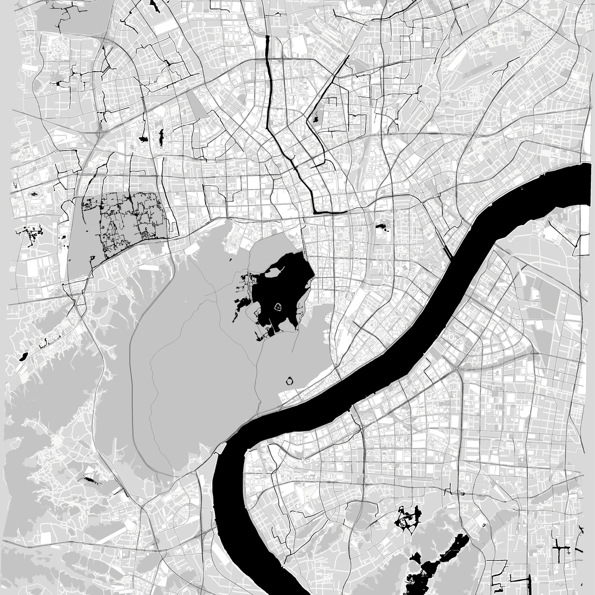

MAP RELIEF / 25 KM
把一座城市，
留在手里。
从地点、照片或现有城市数据开始。取景、选择生成方式，然后交付可打印的多色 3MF。
创建一张地图 ↓
25 km西湖真实范围
200 mm标准成品宽度
12 / 12项目规则通过

HANGZHOU / 30.13—30.36 N
西湖、钱塘江与城市纹理1选位置
🔒 照片仅用于读取 GPS 坐标标记地点，不会以任何形式存储或上传至第三方服务器。解析完成后立即从内存中丢弃。
1 张定位地点，多张自动生成旅程轨迹（需 GPS 原图，微信传图会抹掉 GPS）
从热门城市开始
2定取景 金色框即成品范围，始终居中
取景范围
金色框即成品范围
🔒 取景已锁定（风格图基于此框生成）
目前可生成范围：已拉取的区域（共 80 个可用）
3挑风格 先在上一步点“确定，看风格”
4预览 确认构图与风格，满意后再出打印文件
点上方按钮生成预览
5打印文件 预览满意后再生成，避免白等
运行中
0s
正在准备地图数据
任务令牌